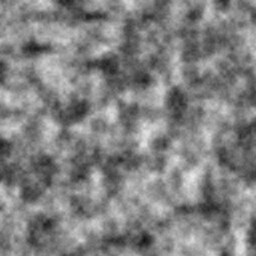
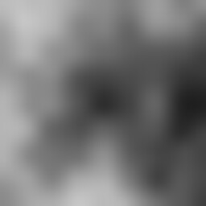
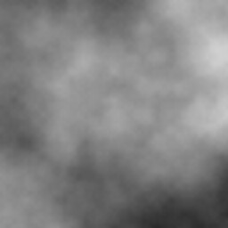
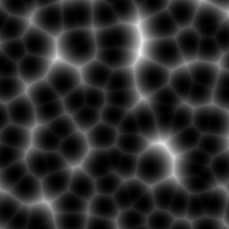
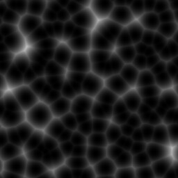
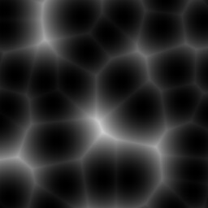

|
VN3D
Value noise generation library
|
VN3D is a simple C library for generating 2D/3D smooth value noise in range [0, 2^32-1]. It uses integer math only and can be well parallelized.
To use it you must create a generator with call to vn_value_generator(). It accepts two arguments: number of octaves and initial grid size. In the following example the uniform 2^10 x 2^10 x 2^10 grid is created and the number of octaves is 5:
The initial grid size determines the lowest frequency in the output noise. Bigger number for initial grid size results in lower frequency for the lowest frequency component. The number of octaves determines how many higher frequency details will be mixed into the output. Bigger number of octaves results in more detailed noise. As a limitation, grid size values cannot be less than number of octaves. It is a good idea for initial grid size to be close to n-1 or n-2 where 2^n is length, width or depth of a texture you want to generate. E.g. if you want to generate 2D texture with size 1000x1000 it's good to call vn_value_generator() like so:
Then you call vn_noise_3d(), vn_noise_2d() or vn_noise_1d() in nested loops to generate a texture. The generator gen is not modified during these calls, so loops can be parallelized, provided the output of each iteration goes through different cache lines.
Finally, generator must be destroyed with vn_destroy_generator().
| 1 | 2 | 3 |
|---|---|---|

4 octaves, grid size 16x16 |

3 octaves, grid size 64x64 |

6 octaves, grid size 64x64 |
| 1 | 2 | 3 |
|---|---|---|

1 dot, grid size 32x32 |

2 dots, grid size 32x32 |

1 dot, grid size 64x64 |
Worley noise was added and API wad changed a bit. See vn_worley_generator().
1D value noise. Value noise generator constructor always succeeds.
Fixed build on linux. Simple example program called vn3dgen which generates grayscale jpeg noise textures using jpeg-turbo library.
1.8.13